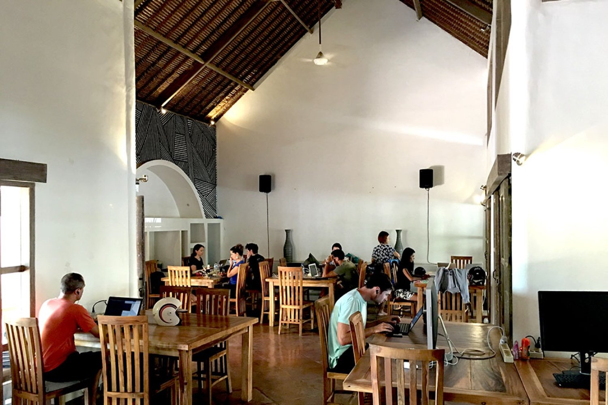
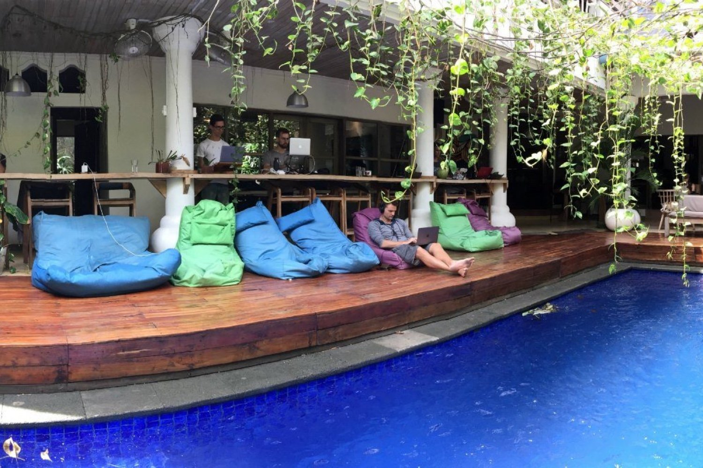
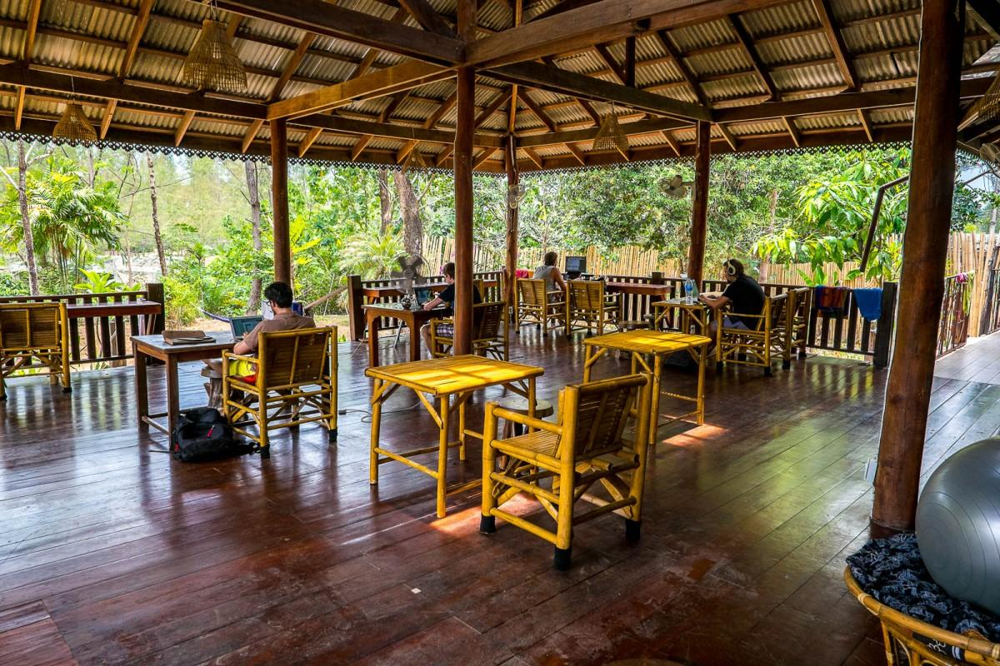
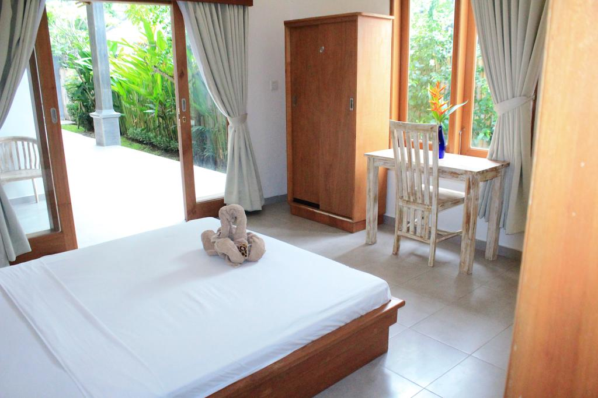
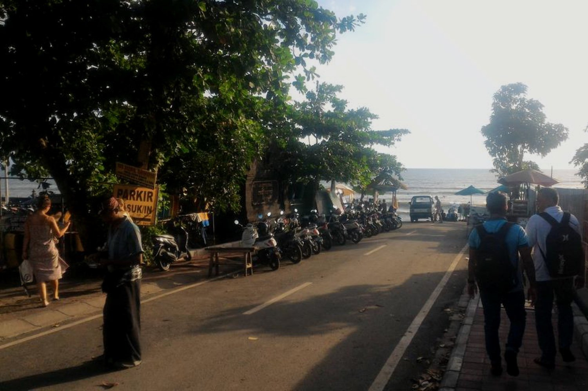
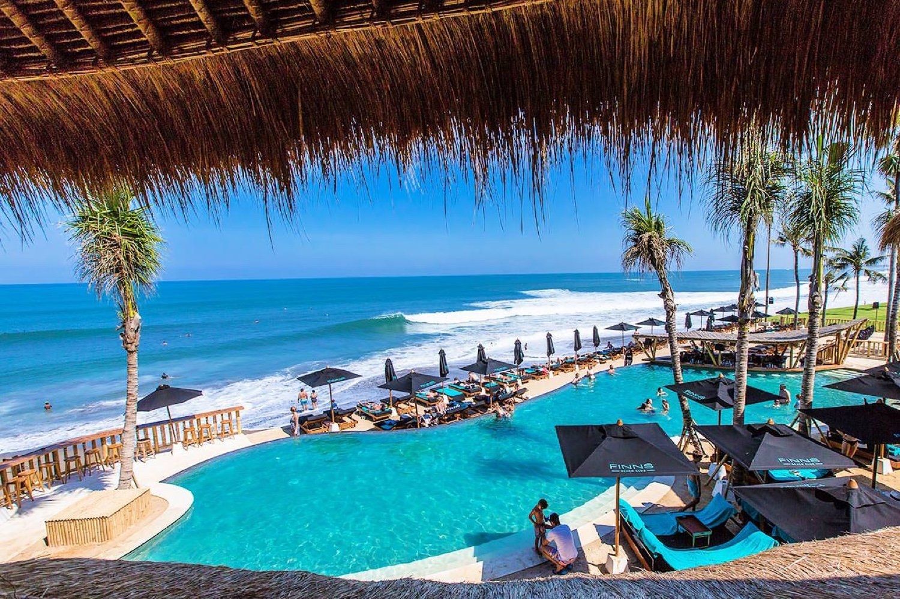

許多人對峇里島第一個印象就是度假勝地，其實峇里島除了度假之外也是有著豐富的火山地形以及多元的峇里島古文化，當然，陽光與海灘也是不可少的，但作為一個 nomad 長時間住在當地，相信會對這個神秘的島嶼有更深一層的認識。
工作空間
位於峇里島熱門的度假勝地長谷（Canggu）的 Dojo Coworking Space，整體環境與氛圍充滿了南洋與度假的風情，讓你以最放鬆的心情面對每天中的日常，用最自在的方式完成工作中的挑戰。如果壓力還是大得喘不過氣？直接衣服脫了迎向大海的懷抱吧，海灘就在距離你不到三分鐘的距離！但別搞錯了，對於工作我們還是很認真的，一應俱全的硬體設備，可靠的網路，豐富的活動與 meetups，當然也少不了從世界各地慕名而來的 Nomads。絕妙的創意往往來自最放鬆無壓力時的靈光一閃，報名 WorldWideWork，工作與生活之間的平衡遠比你想像中的還要簡單。



住宿環境
在峇里島真的很難住的不豪華不舒適，私人房間衛浴，免費Wifi，Dojo 工作空間以及海灘皆在步行可及的範圍之內。位於峇里島最具嬉皮氛圍的長谷（Canggu），近在咫尺的回聲海灘（Echo Beach）與都丁灣海灘（Batu Bolong Beach）除了盛行各種水上活動，更是衝浪者的天堂。此外，海灘上更有許多風情萬種的 Beach Club，只需付簡單的入場費就可以在裡面待上一整天，世界級的海景，無邊游泳池，萬國百匯美食與調酒，還有什麼比這個更適合犒賞辛勤工作的自己呢？


